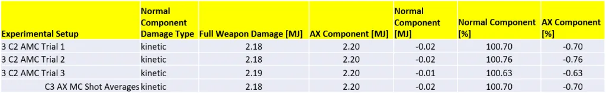
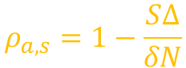
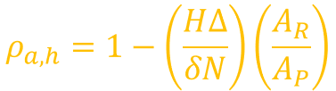
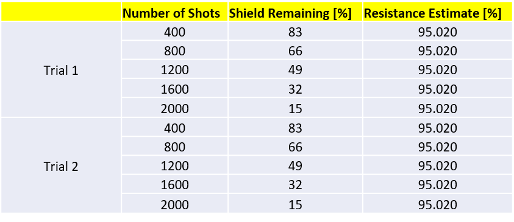
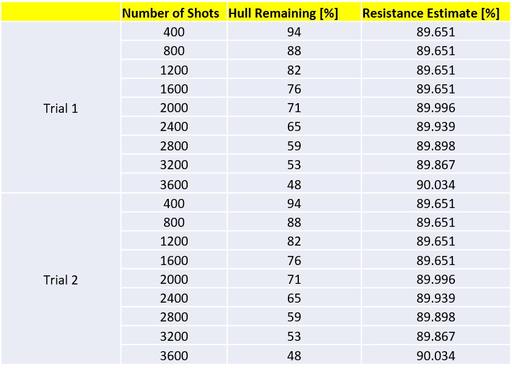

The galactic community recently decided to support Zende Partners in the development of an Advanced Multi-Cannon (AMC) weapon [1]. Given the usual lack of transparency in weapon documentation, the goal of this study was to characterize the Anti-Xeno (AX) properties of this newly developed module. Additionally, after the basic AX damage properties of the weapon were measured, it was discovered that the AMCs have the unique ability to help us estimate the AX resistance of human shields and hull plating. A “bonus” analysis was therefore carried out to estimate the AX resistance of human technology.
Mathematical and experimental rigor was used to estimate the AX damage properties of the newly developed Advanced Multi-Cannon. The following facts were uncovered in this analysis:
The above resistance values will be used in a future study to re-estimate the damage partitioning of other human and Guardian AX weapons.
Here we employ the basic damage equation that was originally formulated in the Thargoid shield analysis [2], in which damage was tested against a Cyclops Interceptor’s shield:
where δ is the full weapon damage figure, N is the total number of weapon shots fired, ω_a is the AX component of the full damage, ω_n is the “normal” or conventional component of the full damage, ρ_a is the resistance of the Thargoid’s shield to AX damage, ρ_n is the resistance of the Thargoid’s shield to the weapon’s conventional damage (which can be thermal, kinetic, explosive, or absolute), S is the Cyclop’s shield strength, and ∆ is the fraction of the shield strength at a given moment after the Interceptor has activated its shield. In this analysis we will be making the assumption that Thargoids have no resistance (or enhancement) to AX damage, so we will set to ρ_a to zero.
We know that the two fractional damage components must add up to unity:

Additionally, the weapon damage value that is listed in the outfitting screen is just the product of the full damage and its corresponding scaling factor:

Plugin in the two equations above into the basic damage equation, we can solve for the full weapon damage δ:

Once we have the full weapon damage, we can estimate the fractional components of the AMC. The cyclops shield strength and its resistances were measured in a previous analysis [2]. The parameter ∆ and the number of shots fired are values that are measured experimentally.
The data acquisition and experimental methodology used in this analysis is the same one employed in the shield strength analysis [2]. In this study we used three (unengineered) C2 Advanced Multi-Cannons in order to reduce the Cyclops shield as much as possible in a short period of time. Each cannon was configured to deliver AX damage. A total of three experimental trials were conducted and the results were averaged together as shown below.

We hypothesized that all of the damage delivered by the weapon is attributed to the AX component. The results above indicate that the damage attributed to the normal, i.e. kinetic, component of the damage is essentially zero, within the experimental uncertainties. It’s possible the full weapon damage is actually closer to 2.18, as indicated by the averaged results, but we can’t make that conclusion with certainty given the slight errors in the experiment.
The fact that all of the damage delivered by an AX-configured AMC is actually a surprising result, which, as will be explained in the next section, will allow us to conduct more precise experiments on human shielding and hull technologies than would have otherwise been possible with other AX weapons.
For a long time it was assumed that most, if not all, of the AX damage that impinges a human shield or hull plating is fully mitigated without consequence [3]. Some work had been done in the past that determined the human shield and hull resistance to be 95% and 90% respectively [4]. In this section we definitively address the question of human AX resistances in the modern (i.e. 3.4) era.
The theoretical treatment starts with the first two-component damage equation described in the previous equation. Given the fact that AX-configured AMCs deal 100% AX damage, we can readily solve the equation for the shield AX damage resistance:

where S is the human target shield strength, δ is the full weapon damage figure, N is the total number of weapon shots fired, and ∆ is the fraction of the shield strength at a given moment after the Interceptor has activated its shield. We can adapt the two-component damage equation to the case of hull damage, in which case can solve for the hull AX damage resistance:

where H is the human target hull strength, A_R is the target Armor Rating, A_P is the AMC Armor Piercing, and the other variables are the same as described above. It should be noted that parameter ∆ and the number of shots fired are values that are measured experimentally, with the former extracted from the left-hand panel of the firing ship.
The human shield resistance to AX damage was determined by performing damage tests against a T-9 with a C7 shield generator fully (i.e. G5) engineered for thermal resistance. The shield had a strength of 257.8 MJ. A Krait MkII equipped with four C2 AMCs was used to deal damage to the shield. Two trials were conducted, and each was broken down into 400-shot segments, and at each point the shield resistance estimate was extracted. The table below shows the results for both trials. The result obtained was very consistent at 95.020% AX resistance.

The same type of experiment was conducted versus the hull of a T-9, which consisted of the standard light weight hull, with a total integrity of 864. It should be noted that the Armor Rating of the T-9 is 65. The AMC damage per shot is 2.2, and the corresponding Armor Piercing is 37. The table below shows the results for two trials at various points in the data acquisition process. Given the relatively high integrity of the standard T-9 hull, the results had some degree of error to start with, but as more shots were fired the AX resistance measurement got progressively more precise. The final measurement of the hull resistance to AX damage is 90.034%. Both trials yielded the same exact results.

We should note that the final figure of around 90% was confirmed by estimating the hull damage with two additional methods: 1) looking at the repair time of a C5 repair limpet, and 2) estimating the amount of hull lost by simply looking at the cost required to repair the hull at the station. In all cases the final estimate was still 90% AX resistance.
A two-component damage model was used to estimate the damage partitioning of the newly developed AMCs. It was found that, when configured with AX ammunition, the AMCs deal 100% AX damage. That fact was leveraged to get a handle on the AX resistance of human technology. It was found that human shields have an AX resistance of 95% and human armor plating has a resistance of 90%. By corollary, other facts about about the AMC were confirmed, such as damage per shot and Armor Piercing.
This study was funded in part by the Canonn Interstellar Research Group and the Xeno Investigation division of the Anti-Xeno Initiative.
We would like to thank CMDR Joulupunikki for participating in this study. In addition to piloting the target vessel, he provided the engineered shields for this analysis as well as peripheral hardware. We would also like to thank CMDR 100.RUB for providing guidance, words of wisdom, and becoming a strong advocate for transparency in weapon documentation for the benefit of the galactic community.